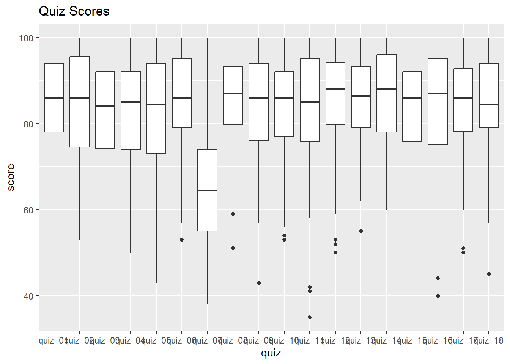
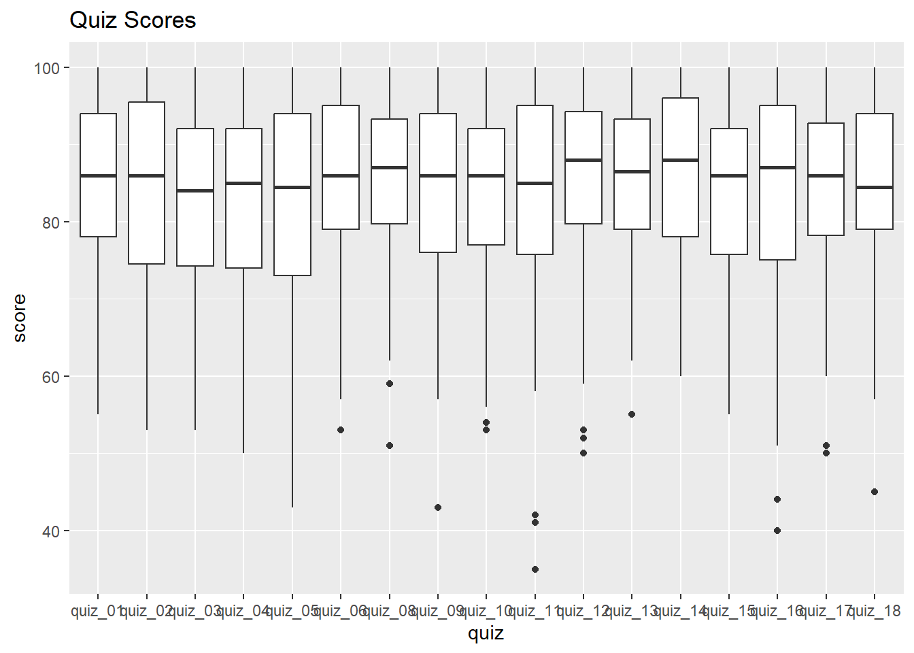
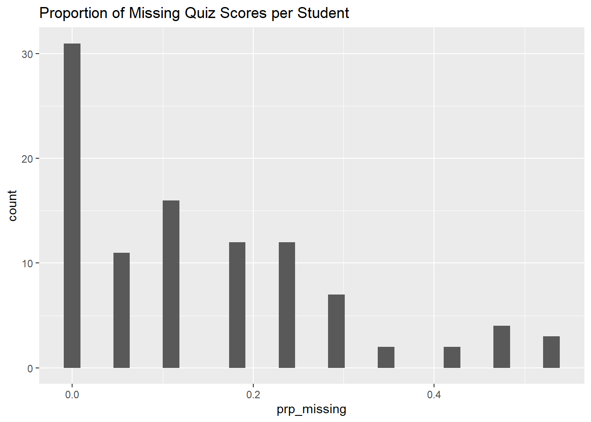

Data Wrangling Exercise 3
Resample columns, Pivot Wide-to-Long, Manage Missing Values
In this exercise, we’ll continue to work with the pop-quiz data using the following techniques:
- resampling character values using a related table
- pivoting from wide-to-long
- global summaries and filters
- three ways to manage missing values
Setup
Load the packages we’ll be using:
We’ll continue to work with the pop-quiz data we saw in the first exercise:
ss_fn <- here::here("./exercises/data/student_scores.tsv")
ss_nn_tbl <- readr::read_tsv(file = ss_fn, show_col_types = FALSE) |>
rename_all(tolower) |>
rename_all(~ str_replace_all(., " ", "_"))
head(ss_nn_tbl)Resample the year Column
Let’s look at the values of the year column.
Suppose we want to replace these codes with their corresponding labels (i.e., ‘sophomore’, ‘junior’, ‘senior’). An easy way to add labels for codes or abbreviations is:
- Import (or create) a data frame containing the codes and their labels
- Join the data frames together based on the matching codes
Step 1: Import a table with the codes and their labels
year_codes_tbl <- here::here("exercises/data/year_codes.tsv") |>
read_tsv(show_col_types = FALSE)
year_codes_tblStep 2: Join the labels table to the data:
ss_year_lbl_tbl <- ss_nn_tbl |>
left_join(year_codes_tbl, by = "year") |>
select(name, year, year_lbl)
ss_year_lbl_tbl |> slice(1:20)Randomly Divide the Data into Training and Validation Sets
It’s very common in research to divide data into ‘training’ and ‘validation’ sets. The ‘training’ data is use to train a regression model, after which the validation set is used to assess the accuracy of the model.
Here, we create a column called ‘set’, and populate it such that ~80% of the rows are tagged for training, and 20% for validation.
ss_trainvalid_tbl <- ss_nn_tbl |>
mutate(set = sample(c("training", "validation"),
size = nrow(ss_nn_tbl),
replace = TRUE,
prob = c(0.8, 0.2))) |>
relocate(set, .after = name)
head(ss_trainvalid_tbl)## See how close we got to 80/20
table(ss_trainvalid_tbl$set)
training validation
72 28 CHALLENGE
- Modify the ‘set’ column such that all the students in Discussion Sections 1-3 are used for model fitting, and Discussion Section 4 is used as the validation dataset.
## Your answer hereReshape the Data
In Part I, we only worked with quiz_01. But there are 17 other quizzes!
Wouldn’t it be nice if we could:
- compare the distribution of scores across all quizzes
- compute for each student the average of all quiz scores (i.e., for their final grade)
All of the above would be a lot easier to do if we make these data tidy!
In this case, to make the data tidy we have to transform it from its current wide format to a long format. We can do with this with tidyr::pivot_longer() with the following arguments:
-
cols- a tidyselect expression identifying the columns we want turn into new rows
-
names_to- the name of a new column where the old columns names should go (because those columns are going to disappear) -
values_to- the name of a new column for the values of old columns
ss_long_tbl <- ss_nn_tbl |>
pivot_longer(
cols = starts_with("quiz"),
names_to = "quiz",
values_to = "score"
)See what we got:
Visualize and Summarise all of the Quizes
Now that the data are tidy, we can make a box-and-whiskers plots for all of the quizzes:
ggplot(ss_long_tbl, aes(y = score, x = quiz)) +
geom_boxplot() +
labs(title = "Quiz Scores")Warning: Removed 259 rows containing non-finite outside the scale range
(`stat_boxplot()`).
Something’s off with Quiz 7! Let’s remove that one from our dataset.
Now view the box plots again:
ggplot(ss_cln_tbl, aes(y = score, x = quiz)) +
geom_boxplot() +
labs(title = "Quiz Scores")Warning: Removed 247 rows containing non-finite outside the scale range
(`stat_boxplot()`).
Much better!
Compute Average Scores
Next, let’s compute the average score per student
CHALLENGE
- Compute the overall average (all quizzes, all students) for each treatment group.
## Your answer hereWork with Missing Values
Let’s begin by summarizing the number and proportion of missing values per student:
ss_stdnt_na_tbl <- ss_cln_tbl |>
group_by(name) |>
summarize(num_missing = sum(is.na(score)),
prp_missing = num_missing / n())
head(ss_stdnt_na_tbl)It will be easier to see the distribution as a histogram:
ss_stdnt_na_tbl |>
ggplot(aes(x = prp_missing)) +
geom_histogram() +
labs(title = "Proportion of Missing Quiz Scores per Student")`stat_bin()` using `bins = 30`. Pick better value with `binwidth`.
CHALLENGE
- How many students completed all the quizzes?
## Your answer here- Which quiz had the most missing scores?
## Your answer hereDrop NAs
One option is simply to drop any row where the score is NA. We can do this with tidyr::drop_na().
ss_nomissing_tbl <- ss_cln_tbl |> drop_na(score)
## Compare the number of rows before and after dropping the NAs
nrow(ss_cln_tbl); nrow(ss_nomissing_tbl)[1] 1700[1] 1453Replace NAs with 0
We can easily replace NAs with a constant like 0 using tidyr::replace_na().
ss_cln_tbl |> replace_na(list(score = 0)) |> slice(1:20)CHALLENGE
- How does replacing NA’s with 0’s affect the overall class average?
## Your answer hereReplace NA’s with Students’ Average Score
Another option might be to replace the NAs with the average of all the other student’s quiz scores. We can do this by:
- computing students’ average scores in a separate table
- joining the average score table to the data
- replacing NAs with the average score
Step 1: Construct a table of each student’s overall average scores on the quizzes they took.
ss_std_avg_tbl <- ss_cln_tbl |>
group_by(name) |>
summarize(overall_avg = mean(score, na.rm = TRUE))
head(ss_std_avg_tbl)Step 2: Next, join the overall average table to the data:
ss_scores_plus_avg_tbl <- ss_cln_tbl |>
left_join(ss_std_avg_tbl, by = "name") |>
select(name, quiz, score, overall_avg)
ss_scores_plus_avg_tbl |> slice(1:20)Step 3. Replace the NAs with the students’ average using mutate():
ss_na2avg_tbl <- ss_scores_plus_avg_tbl |>
mutate(score = if_else(is.na(score), overall_avg, score))
ss_na2avg_tbl |> slice(1:40)How does this change the overall average?
[1] 84.15692[1] 82.93143CHALLENGE (Homework)
- Drop students who missed more than 40% of the quizzes.
## Your answer here- What do these data say about the theory that coming to class supports learning?
## Your answer hereDONE!
Remember to render your Quarto document so you have a pretty HTML file to keep for future reference.